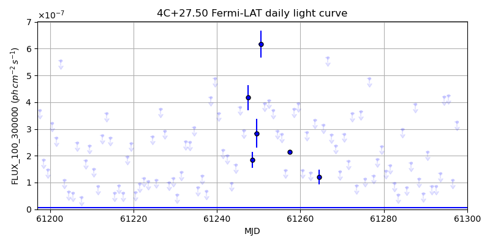
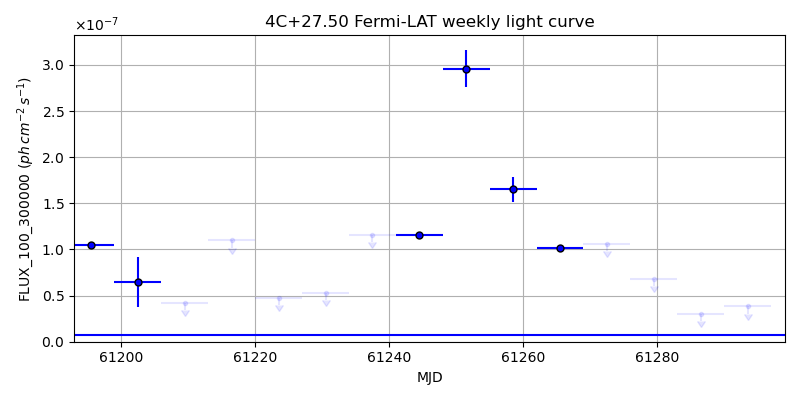
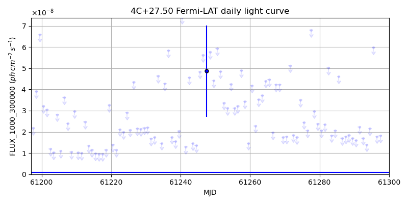
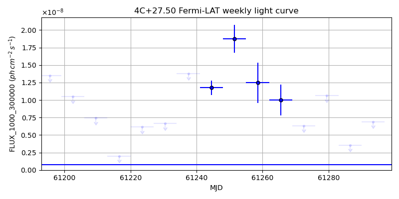

LAT Lightcurve site: https://fermi.gsfc.nasa.gov/ssc/data/access/lat/msl_lc/source/4C_p27d50
NED: Query
Time of last update of this page: UT: 2026-09-15 15:31 (MJD: 61298.647)
| Property | Value |
|---|---|
| R.A. | 23:21:59.76 |
| Dec. | 27:32:45.6 |
| z | 1.255 |
| 3FGL SpectrumType | PowerLaw |
| 3FGL PL Index | 2.28 |
| 3FGL Flux_100_300000 | 1.52e-08 1 / (s cm2) |
| 3FGL Flux_1000_300000 | 7.91e-10 1 / (s cm2) |
| 3FGL Flux >200 GeV | 8.84e-13 1 / (s cm2) |
| 3FGL Extrap. Crab >200 GeV | 0.00 |
| 3FGL Flux After EBL Absorption >200GeV | 4.15e-15 1 / (s cm2) |
| 3FGL EBL Crab Fraction >200GeV | 0.00 |

| MJD | dMJD | Flux | dFlux | Frac3FGL | FracCrab>200GeV | EBLFracCrab>200GeV |
|---|---|---|---|---|---|---|
| 61293.50 | 0.50 | 1.35e-07 | 0.00e+00 | 0.00 | 0.00 | 0.00 |
| 61294.50 | 0.50 | 4.20e-07 | 0.00e+00 | 0.00 | 0.00 | 0.00 |
| 61295.50 | 0.50 | 4.24e-07 | 0.00e+00 | 0.00 | 0.00 | 0.00 |
| 61296.50 | 0.50 | 1.08e-07 | 0.00e+00 | 0.00 | 0.00 | 0.00 |
| 61297.50 | 0.50 | 3.26e-07 | 0.00e+00 | 0.00 | 0.00 | 0.00 |

| MJD | dMJD | Flux | dFlux | Frac3FGL | FracCrab>200GeV | EBLFracCrab>200GeV |
|---|---|---|---|---|---|---|
| 61265.50 | 3.50 | 1.02e-07 | 2.37e-09 | 14.78 | 0.06 | 0.00 |
| 61272.50 | 3.50 | 1.06e-07 | 0.00e+00 | 0.00 | 0.00 | 0.00 |
| 61279.50 | 3.50 | 6.84e-08 | 0.00e+00 | 0.00 | 0.00 | 0.00 |
| 61286.50 | 3.50 | 3.04e-08 | 0.00e+00 | 0.00 | 0.00 | 0.00 |
| 61293.50 | 3.50 | 3.85e-08 | 0.00e+00 | 0.00 | 0.00 | 0.00 |

| MJD | dMJD | Flux | dFlux | Frac3FGL | FracCrab>200GeV | EBLFracCrab>200GeV |
|---|---|---|---|---|---|---|
| 61293.50 | 0.50 | 1.40e-08 | 0.00e+00 | 0.00 | 0.00 | 0.00 |
| 61294.50 | 0.50 | 2.16e-08 | 0.00e+00 | 0.00 | 0.00 | 0.00 |
| 61295.50 | 0.50 | 5.97e-08 | 0.00e+00 | 0.00 | 0.00 | 0.00 |
| 61296.50 | 0.50 | 1.78e-08 | 0.00e+00 | 0.00 | 0.00 | 0.00 |
| 61297.50 | 0.50 | 1.81e-08 | 0.00e+00 | 0.00 | 0.00 | 0.00 |

| MJD | dMJD | Flux | dFlux | Frac3FGL | FracCrab>200GeV | EBLFracCrab>200GeV |
|---|---|---|---|---|---|---|
| 61265.50 | 3.50 | 9.97e-09 | 2.20e-09 | 12.64 | 0.05 | 0.00 |
| 61272.50 | 3.50 | 6.33e-09 | 0.00e+00 | 0.00 | 0.00 | 0.00 |
| 61279.50 | 3.50 | 1.06e-08 | 0.00e+00 | 0.00 | 0.00 | 0.00 |
| 61286.50 | 3.50 | 3.55e-09 | 0.00e+00 | 0.00 | 0.00 | 0.00 |
| 61293.50 | 3.50 | 6.89e-09 | 0.00e+00 | 0.00 | 0.00 | 0.00 |
--------------------------------------------------------- Using user-supplied coords: 23:21:59.76 27:32:45.6 2000 --------------------------------------------------------- FLWO UT night of: 2026-09-16 Local Sid. @ Midnight: 23:17 Sunset (-15.0) (local, UT): 19:37 02:37 Sunrise (-15.0) (local, UT): 05:01 12:01 Moonrise (local, UT): Moonset (local, UT): 20:59 03:59 Moon phase: 0.27 --------------------------------------------------------- AzTime LSID UT Obj_el Obj_az Mn_el Mn_az Sep. --------------------------------------------------------- 19:37 18:53 02:37 32.1 75.1 13.4 230.2 128.6 20:07 19:23 03:07 38.4 78.0 8.5 234.7 128.5 20:37 19:53 03:37 44.7 80.9 3.4 238.9 128.3 21:07 20:23 04:07 51.0 83.9 -1.3 242.7 128.1 21:37 20:53 04:37 57.4 87.2 -7.8 246.3 127.9 22:07 21:23 05:07 63.8 90.9 -13.6 249.6 127.6 22:37 21:53 05:37 70.2 95.8 -19.4 252.8 127.4 23:07 22:23 06:07 76.5 103.3 -25.4 255.9 127.2 23:37 22:53 06:37 82.5 119.9 -31.4 259.0 126.9 00:07 23:23 07:07 86.0 181.7 -37.4 262.0 126.6 00:37 23:53 07:37 82.3 241.0 -43.5 265.2 126.4 01:07 00:24 08:07 76.2 257.1 -49.6 268.6 126.1 01:37 00:54 08:37 69.9 264.4 -55.7 272.3 125.8 02:07 01:24 09:07 63.5 269.2 -61.8 276.8 125.5 02:37 01:54 09:37 57.2 272.9 -67.8 282.7 125.2 03:07 02:24 10:07 50.8 276.2 -73.7 291.5 124.9 03:37 02:54 10:37 44.4 279.2 -79.0 307.4 124.6 04:07 03:24 11:07 38.2 282.1 -82.7 342.4 124.3 04:37 03:54 11:37 31.9 285.0 -81.9 32.3 124.0 05:01 04:19 12:01 26.9 287.4 -78.4 56.3 123.7 --------------------------------------------------------- Dark hours >55 deg.: 5.35 srcstart (UT): 2026-09-16 04:25 srcend (UT): 2026-09-16 09:46